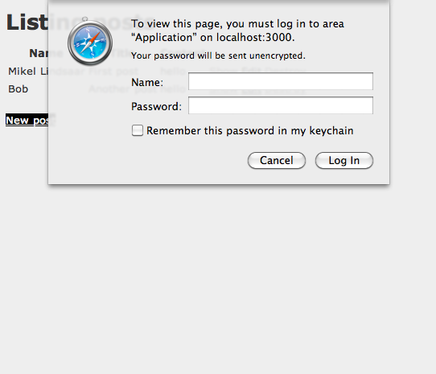

Ce guide utilise Rails 3.0. Une partie du code montré ici ne fonctionne pas avec les versions précédentes de Rails.
1 Ce que ce guide suppose
Ce guide est conçu pour les débutants qui veulent s’initier à la création d’une application Rails. Il ne suppose aucune expérience avec Rails. Cependant, pour vraiment en profiter, voici les pré-requis logiciels indispensables :
- le langage Ruby, au minimum la version 1.8.7
Note that Ruby 1.8.7 p248 and p249 have marshaling bugs that crash Rails 3.0. Ruby Enterprise Edition have these fixed since release 1.8.7-2010.02 though. On the 1.9 front, Ruby 1.9.1 is not usable because it outright segfaults on Rails 3.0, so if you want to use Rails 3 with 1.9.x jump on 1.9.2 for smooth sailing.
- le gestionnaire de paquet RubyGems
- une installation opérationnelle du moteur de base de données SQLite3
Rails est un framework pour le langage Ruby. Sans expérience préalable du langage, la première marche de votre apprentissage du framework risque d’être un peu haute. Voici quelques bonnes ressources gratuites en ligne pour bien débuter avec Ruby :
2 Qu’est-ce que Rails ?
Rails est un framework pour le développement d’applications web écrit avec le langage Ruby. Il est conçu pour faciliter la programmation d’applications web, en prenant plusieurs décisions quant à ce dont tous les développeurs ont besoin pour démarrer. Il vous permet d’écrire moins de code pour accomplir plus qu’avec d’autres langages ou frameworks. Les développeurs Rails expérimentés assurent également qu’il rend le développement d’applications web plus amusant.
Rails est “opiniâtre” (opinionated software). C’est-à-dire qu’il estime qu’il y a une “meilleure” façon de faire des choses et qu’il est conçu pour vous encourager à le faire ainsi, et dans certains cas qu’il décourage les alternatives. Si vous suivez la “Voie de Rails” (Rails Way) vous augmenterez sans doute vraiment votre productivité. Si vous persistez à conserver vos habitudes, prises avec d’autres langages, en développant avec Rails, et essayez d’appliquer des recettes apprises ailleurs, vous pourriez moins apprécier.
La philosophie de Rails comprend ces principes fondamentaux :
- DRY – “Ne vous répétez Pas” (Don’t Repeat Yourself) – suggère qu’écrire et ré-écrire le même code à plusieurs reprises est une mauvaise chose.
- “Convention plutôt que configuration” (Convention Over Configuration) – signifie que Rails prend des décisions sur ce que vous voulez faire et sur la façon de le faire, plutôt que de vous laisser ajuster tous les petits détails dans d’innombrables fichiers de configurations.
- REST – le meilleur “pattern” (motif) pour des applications web – organisant votre application autour de ressources et de verbes HTTP standards est la méthode la plus efficace.
2.1 L’architecture MVC
Rails est organisé autour de l’architecture Modèle, Vue, Contrôleur, habituellement appelée simplement MVC. Les bénéfices de MVC comprennent :
- la séparation de la logique métier de l’interface utilisateur,
- la limitation naturelle des répétitions (DRY),
- l’évidence de l’emplacement des différents types de code pour une maintenance facilitée.
2.1.1 Modèles Un modèle représente l’information, les données d’une application et les règles pour la manipuler. Dans le cas de Rails, les modèles sont d’abord utilisés pour gérer les interactions avec les tables dans une base de données. Le plus souvent une table dans votre base correspond à un modèle dans l’application. L’essentiel de la logique métier de votre application est concentré dans les modèles.
2.1.2 Vues
Les vues sont l’interface utilisateur de votre application. En Rails, les vues sont souvent des fichiers HTML contenant du code Ruby intégré dédié à la présentation des données. Les vues ont la responsabilité de fournir des données au navigateur, ou aux autres outils utilisés pour faire des requêtes à votre application.
2.1.3 Contrôleurs
Les contrôleurs constituent la “colle” entre les modèles et les vues. En Rails, les contrôleurs sont responsables du traitement des requêtes entrantes en provenance du navigateur, de l’interrogation des modèles pour obtenir des données, et du passage de ces données aux vues pour leur présentation.
2.2 Les composants de Rails
Rails ships as many individual components.
2.3 Les composants de Rails
Rails se compose de plusieurs composants individuels :
- Action Pack
- Action Controller
- Action Dispatch
- Action View
- Action Mailer
- Active Model
- Active Record
- Active Resource
- Active Support
- Railties
2.3.1 Action Pack
Action Pack une gem unique contenant Action Controller, Action View et Action Dispatch, le “VC” de “MVC”.
2.3.2 Action Controller
Action Controller est le composant qui gère les contrôleurs dans une application Rails. Le framework d’Action Controller traite les demandes entrantes, extrait les paramètres, et les affecte à l’action souhaitée. Les services fournis par Action Controller comprennent la gestion des sessions, le rendu des templates, et la gestion des redirections.
2.3.3 Action View
Action View gère les vues de votre applications Rails. Il peut générer du HTML ou du XML par défaut. Action View gère les modèles de rendu, y compris les “nested” (emboîtés) ou partiels, et supporte nativement AJAX.
2.3.4 Action Dispatch
Action Dispatch s’occupe du routage des requêtes web et les distribue comme vous le souhaitez, soit vers votre application soit vers une autre application Rack.
2.3.5 Action Mailer
Action Mailer est un framework pour construire des services de messagerie. Vous pouvez utiliser Action Mailer pour recevoir et traiter des e-mails entrants, ou pour envoyer des e-mails, qu’ils soient de simples textes ou complexes et multiparties, basés sur des templates flexibles,
2.3.6 Active Model
Active Model fournit une interface des services de la gem Action Pack les gems ORM, pour Object Relationship Mapping, tels qu’Active Record. Active Model permet à Rails d’utiliser d’autres frameworks d’ORM en remplacement d’ActiveRecord si votre application le nécessite.
2.3.7 Active Record
Active Record est la base des modèles des applications Rails. Il permet une indépendance par rapport aux bases de données, fournit les fonctionnalités de base CRUD, des capacités avancées de recherche, et la capacité de relier les modèles les uns aux autres, entre autres services.
2.3.8 Active Resource
Active Resource fournit un framework pour gérer la connexion entre des objets métiers et des services web RESTful. Il implémente une façon de relier des ressources web à des objets locaux avec une sémantique CRUD.
2.3.9 Active Support
Active Support est un vaste ensemble de classes utilitaires et d’extensions à la bibliothèque standard de Ruby qui sont utilisés en Rails, tant par le noyau que vos applications.
2.3.10 Railties
Railties est le noyau de Rails qui construit toutes les applications Rails en assemblant les différents frameworks.
2.4 REST
REST, pour Representational State Transfer, est la fondation des architectures “RESTful”.
Elle est généralement considérée être la thèse doctorale de Roy Fielding, Architectural Styles and the Design of Network-based Software Architectures. Si vous pouvez lire cette thèse, REST pour Rails se concentre dans deux principes:
- l’utilisation d’identificateurs de ressources, tels que des URLs, pour représenter des ressources
- le transfert de représentations de l’état de cette ressource entre les composants d’un système.
Par exemple, pour une application Rails une requête telle que :
DELETE /photos/17
serait comprise comme faisant référence à une ressource photo avec l’ID 17, et indiquant une certaine action : la suppression de cette ressource. REST est un style naturel pour l’architecture d’applications web, et Rails l’exploite, vous protégeant de certaines de ces complexités.
Pour plus de détails sur le style architectural REST, ces ressources sont plus accessibles que la thèse de Fielding:
- A Brief Introduction to REST par Stefan Tilkov
- An Introduction to REST (didacticiel vidéo) par Joe Gregorio
- Representational State Transfer article Wikipedia
3 Creating a New Rails Project
En suivant ce guide, vous créerez un projet Rails appelé blog, un weblog (très) simple. Avant de pouvoir construire l’application, vous devez vérifier que Rails est bien installé.
3.1 Installing Rails
Le plus souvent, la façon la plus simple d’installer Rails est d’utiliser RubyGems :
(probablement en tant que root) # gem install rails
Si vous travaillez sous Windows, vous devez être conscient que la grande majorité du développement Rails se fait dans des environnements Unix. Si Ruby et Rails s’installent facilement, par exemple avec Ruby Installer, l’écosystème suppose souvent que vous puissiez compiler des gems développées en C, ou travailler dans une fenêtre de commande. Si cela est possible, nous vous suggérons l’installation d’une machine Linux virtuelle et son utilisation pour vos développements, plutôt que directement Windows.
3.2 Création de l’application Blog
La meilleure façon d’utiliser ce guide est de suivre chaque étape, aucun code, aucune étape nécessaire pour cette application exemple ne manque, pour vous permettre de suivre littéralement pas à pas. Si vous souhaitez voir le code terminé, vous pouvez le télécharger : Getting Started Code.
Pour commencer, ouvrez une console, naviguez jusque dans un répertoire où vous avez le droit de créer des fichiers, et tapez :
$ rails new blog
Cela va créer une application Rails appelée Blog dans un répertoire blog.
Les options que le générateur d’application de Rails acceptent sont visibles à l’aide de rails new -h.
Après la création de l’application blog, naviguez dans son répertoire et continuez à travailler directement dans cette application :
$ cd blog
Rails crée en effet un répertoire appelé blog dans votre répertoire de travail. Ouvrez ce répertoire et explorez son contenu. La plupart du travail dans ce guide se déroulera dans le répertoire app, mais voici une présentation succincte de chacun des répertoires que Rails crée par défaut dans une nouvelle application :
| Fichier/Répertoire | Présentation |
|---|---|
| Gemfile | Ce fichier vous permet de spécifier les gems, et leurs dépendances, de votre application. |
| README | Un manuel pour votre application. Utilisez pour indiquer à d’autres ce que votre application fait, comment la configurer, etc… |
| Rakefile | Ce fichier contient des travaux batchs qui peuvent être exécutés en mode console. |
| app/ | Contient les contrôleurs, modèles, et les vues de votre application. Ce sera votre principal centre d’intérêt pour le reste de ce guide. |
| config/ | Configure les règles d’exécution de votre application, les routes, les bases, … |
| config.ru | Ce fichier de configuration est utilisé par les serveurs Rack pour démarrer votre application. |
| db/ | Contient le schéma de votre base, ainsi que les migrations, qui seront présentées très prochainement. |
| doc/ | Documentation détaillée de votre application. |
| lib/ | Modules étendus de votre application, non couverts par ce guide. |
| log/ | Fichiers de log de votre application. |
| public/ | Le seul répertoire vu tel quel. C’est là que vos images, votre javascript, vos feuilles de style (CSS) et d’autres fichiers statiques doivent se trouver. |
| script/ | Contient le script Rails de démarrage de votre application, et d’autres pour son déploiement, son exécution… |
| test/ | Tests unitaires, fixtures, et dispositif de test. Ce sujet est traité dans Test des Applications Rails |
| tmp/ | Fichiers temporaires |
| vendor/ | Destiné au code complémentaire de tierces parties. Dans une application Rails typique, cela comprend des gems Ruby, le code source de Rails (s’il est installé dans le projet) et les plugins contenant des fonctionnalités additionnelles packagées. |
3.3 Installation des gems requises
Les applications Rails gèrent les dépendances de gems avec Bundler par défaut. Puisque nous n’avons pas d’autres gems que celles dans le Gemfile généré, nous pouvons directement exécuter
$ bundle install
pour les rendre disponibles.
3.4 Configuration d’une base de données
Presque toutes les applications Rails interagissent avec une base de données, celle utilisée est spécifiée dans un fichier de configuration, config/database.yml. Si vous ouvrez ce fichier pour une application qui vient d’être générée, vous voyez une configuration de base de données par défaut pour SQLite3. Ce fichier contient des sections pour 3 différents environnements d’exécution pour Rails par défaut :
- L’environnement développement est utilisé sur votre machine de développement lorsque vous interagissez directement avec l’application
- L’environnement test est utilisé lors de l’exécution des tests automatisés
- L’environnement production est utilisé par votre application déployée pour son accès par tout le monde.
3.4.1 Configuration d’une base de données SQLite3
Rails supporte nativement SQLite3, un gestionnaire de base de données léger qui ne nécessite pas de serveur. Si un environnement de production peut surcharger SQLite, il convient pour le développement et les tests. Rails utilise par défaut une base de données SQLite lors de la création d’un nouveau projet, mais vous pouvez toujours le changer plus tard.
Voici la section d’un fichier de configuration par défaut (config/database.yml) avec les informations de connexion pour l’environnement de développement :
development: adapter: sqlite3 database: db/development.sqlite3 pool: 5 timeout: 5000
Dans ce guide nous utilisons une base de données SQLite3 pour le stockage des données, parce que c’est un moteur sans configuration et qu’il marche tout simplement. Rails supporte également nativement MySQL et PostgreSQL et a des plugins pour d’autres moteurs. Si vous utilisez une base en production, il est très probable qu’un adaptateur Rails existe.
3.4.2 Configuring a MySQL Database
3.4.3 Configuration d’une base de données MySQL
Si vous choisissez d’utiliser MySQL plutôt que le SQLite3 standard, votre config/database.yml sera un peu différent. Voici la section pour l’environnement de développement :
development: adapter: mysql2 encoding: utf8 database: blog_development pool: 5 username: root password: socket: /tmp/mysql.sock
Si l’installation de MySQL sur votre machine de développement a un utilisateur root sans password, cette configuration vous convient. Sinon, changez l’utilisateur et le password dans cette section development.
3.4.4 Configuring a PostgreSQL Database
Enfin si vous choisissez PostgreSQL, votre config/database.yml sera adaptée pour l’utiliser :
development: adapter: postgresql encoding: unicode database: blog_development pool: 5 username: blog password:
Changez l’utilisateur et le password dans cette section development si nécessaire.
Vous n’avez pas à modifier la configuration des bases manuellement. En regardant les options du générateur d’applications, vous avez peut-être remarqué que l’une est —database. Elle vous permet de choisir un adaptateur pour des moteurs relationnels courants. Vous pouvez même exécuter la génération à nouveau : cd .. && rails new blog —database=mysql. Après la confirmation de l’écrasement du fichier config/database.yml, votre application sera configurée pour utilisée MySQL plutôt que SQLite.
3.5 Création de la base de données
Maintenant que votre base de données est configurée, il est temps pour Rails de créer une base vide pour vous. Vous pouvez faire cela en exécutant une commande rake :
$ rake db:create
Cela crée les bases de développement et de test dans le répertoire db/.
Rake est un “moteur de production” généraliste que Rails utilise abondamment. La liste des commandes rake disponibles dans votre environnement applicatif s’obtient par rake -T.
4 Hello Rails!
Un grand classique de l’expérimentation d’un nouveau langage est l’affichage d’un texte sur un écran. Pour faire ça, vous devez démarrer votre serveur d’applications Rails.
4.1 Lancement du serveur web
Votre application est en fait déjà disponible. Pour le voir, vous devez lancer un serveur web sur votre machine de développement. En tapant :
$ rails server
Cela lance une instance de WEBrick par défaut (Rails peut aussi utiliser d’autres serveurs). Pour voir votre application en action, ouvrez un navigateur et allez à http://localhost:3000. Vous devriez voir la page d’information par défaut de Rails :

Pour arrêter le serveur, tapez Ctrl+C dans la console où il s’exécute. En mode développement, Rails ne nécessite pas le plus souvent de redémarrage du serveur ; les changements que vous faites dans les fichiers sont automatiquement utilisés par le serveur.
La page “Welcome Aboard” est le test de base d’une nouvelle application Rails : il permet de vérifier que votre configuration permet de servir au moins cette page. Vous pouvez aussi suivre le lien About your application’s environment pour une synthèse de l’environnement de votre Application.
4.2 Dites “Hello”, Rails
Pour faire dire Hello à Rails, vous devez créer au minimum un contrôleur et une vue. Heureusement, vous pouvez faire cela d’une seule commande. Tapez cette commande dans la console :
$ rails generate controller home index
Si vous utilisez Windows, où si votre installation de Ruby n’est pas standard, il se peut qu’il soit nécessaire de passer explicitement les commandes rails de Rails à Ruby: ruby \path\to\your\application\script\rails generate controller home index.
Rails va créer plusieurs fichiers pour vous, dont app/views/home/index.html.erb. C’est le modèle qui sera utilisé pour afficher les résultats de l’action (la méthode) index de votre contrôleur home. Ouvrez ce fichier dans éditeur de texte et modifiez le pour qu’il contienne une seule ligne de code :
<h1>Hello, Rails!</h1>
4.3 Mise en place de la page d’accueil
Maintenant que nous avons le contrôleur et la vue, nous devons dire à Rails quand nous souhaitons que “Hello, Rails” s’affiche. Dans notre cas, nous voulons le voir lorsque l’on visite la racine du site, http://localhost:3000, plutôt que la page de test “Welcome Aboard”.
La première chose à faire est de supprimer cette page par défaut de votre application :
$ rm public/index.html
C’est nécessaire parce que Rails délivre en priorité les fichiers statiques situés dans le répertoire public plutôt que le contenu dynamique que nous générons depuis les contrôleurs.
Maintenant, vous devez indiquer à Rails l’emplacement de la page d’accueil. Ouvrez le fichier config/routes.rb dans votre éditeur. C’est le fichier de routage de votre application ; il contient des entrées écrites dans un DSL particulier (Domain Specific Language, soit un langage spécifique au domaine) qui indiquent à Rails comment connecter les requêtes entrantes aux contrôleurs et actions. Ce fichier contient de nombreux exemples sur des lignes commentées, et l’une d’elles montre justement comment connecter la racine de votre site à un contrôleur et une action spécifiques. Trouvez la ligne commençant par root :to, dé-commentez la et modifiez la comme suit :
Blog::Application.routes.draw do #... # You can have the root of your site routed with "root" # just remember to delete public/index.html. root :to => "home#index"
La ligne root :to => "home#index" indique à Rails de faire correspondre l’action root à l’action index du contrôleur home.
Maintenant en allant à http://localhost:3000 avec votre navigateur, vous voyez Hello, Rails!.
Pour plus d’information sur le routage, reportez vous à Rails Routing from the Outside In.
5 Démarrer avec le scaffolding
Le scaffolding (échafaudage) de Rails est une façon rapide de générer certaines des pièces importantes d’une application. Si vous voulez créer le modèle, les vues et le contrôleur pour une nouvelle ressource en une seule opération, scaffolding est l’outil qu’il vous faut.
5.1 Création d’une ressource
Dans le cas de l’application Blog, vous pouvez commencer par générer une ressource Post, qui représentera un simple article publié, par scaffolding. Pour cela, tapez cette commande à la console :
$ rails generate scaffold Post name:string title:string content:text
Bien que le scaffolding puisse vous permettre de démarrer rapidement, le code généré ne correspond probablement pas à votre besoin pour votre application. Vous souhaiterez probablement le personnaliser. De nombreux développeurs expérimentés évitent complètement le scaffolding, préférant écrire, tout, ou la plus grande partie de, leur code “à la main”. Rails, cependant, permet de personnaliser très facilement les matrices de génération de modèles, de contrôleurs, de vues et d’autres fichiers sources. Vous trouverez plus d’information dans le guide Creating and Customizing Rails Generators & Templates.
Le générateur scaffold construit 15 fichier dans votre application, ainsi que les répertoires nécessaires, et en modifie 1 autre. Voici une présentation rapide de ce qu’il crée :
| Fichier | Rôle |
| db/migrate/20100207214725_create_posts.rb | une migration pour créer la table posts dans votre base (votre tampon dateur est différent bien sûr) |
| app/models/post.rb | le modèle Post |
| test/fixtures/posts.yml | posts factices pour vos tests |
| app/controllers/posts_controller.rb | le contrôleur de posts |
| app/views/posts/index.html.erb | une vue pour afficher un index de vos posts |
| app/views/posts/edit.html.erb | une vue pour modifier un post existant |
| app/views/posts/show.html.erb | une vue pour afficher un post |
| app/views/posts/new.html.erb | une vue pour créer un post |
| app/views/posts/_form.html.erb | un “partial” (vue partielle) pour contrôler l’apparence du formulaire utilisé par les vues edit et new |
| app/helpers/posts_helper.rb | fonctions “helper” (d’assistance) à utiliser dans les vues posts |
| test/unit/post_test.rb | canevas de test unitaire pour les modèles posts |
| test/functional/posts_controller_test.rb | canevas de test fonctionnel pour le contrôleur posts |
| test/unit/helpers/posts_helper_test.rb | canevas de test unitaire pour les helpers des posts |
| config/routes.rb | modifié pour intégrer les informations de routage des posts |
| public/stylesheets/scaffold.css | feuille de style (CSS) pour améliorer l’apparence des vues générées |
5.2 Exécution d’une migration
L’un des fruits de la commande rails generate scaffold est une migration de base de données. Les migrations sont des classes Ruby conçues pour simplifier la création ou la modification des tables. Rails utilise des commandes rake pour exécuter des migrations, et il est possible d’annuler une migration après l’avoir appliquée à votre base. Les noms de fichier des migrations comprennent un tampon dateur pour s’assurer qu’ils sont bien exécutés dans l’ordre de leur création.
Si vous regardez dans le fichier db/migrate/20100207214725_create_posts.rb (souvenez-vous : votre tampon est différent), vous trouvez :
class CreatePosts < ActiveRecord::Migration
def self.up
create_table :posts do |t|
t.string :name
t.string :title
t.text :content
t.timestamps
end
end
def self.down
drop_table :posts
end
end
Cette migration crée deux méthodes, up, appelée lorsque la migration est appliquée dans la base, et down, si vous souhaitez annuler les changements faits par cette migration par la suite. up ici crée une table posts avec deux champs “string” (chaîne de caractères) et une colonne “text” (texte). Elle crée aussi deux champs tampons pour garder la trace de la création et des modifications des enregistrements. Des informations complémentaires sur les migrations de Rails sont disponibles dans le guide Rails Database Migrations.
A ce stade, vous pouvez utiliser rake pour exécuter la migration :
$ rake db:migrate
Rails exécute la migration et indique que la table posts a été créée.
== CreatePosts: migrating ==================================================== -- create_table(:posts) -> 0.0019s == CreatePosts: migrated (0.0020s) ===========================================
Puisque vous travaillez dans l’environnement de développement par défaut, cette commande s’applique à la base de données définie dans la section development de votre fichier config/database.yml. Si vous souhaitez exécuter les migrations dans d’autres environnements, par exemple en production, vous devez passer explicitement l’environnement en paramètre lors de l’invocation de la commande : rake db:migrate RAILS_ENV=production.
5.3 Ajout d’un lien
Pour accéder à ces posts depuis la page d’accueil que vous avez créée, vous pouvez y ajouter un lien. Ouvrez /app/views/home/index.html.erb et modifiez la comme suit :
<h1>Hello, Rails!</h1>
<%= link_to "My Blog", posts_path %>
La méthode link_to est l’un des “helpers” (assistants) fournis par Rails. Il crée un hyperlien à partir du texte à afficher vers la destination, dans ce cas le chemin des posts.
5.4 Écriture de posts dans le navigateur
Maintenant vous êtes prêt à écrire des posts. Pour faire cela, allez à http://localhost:3000 et cliquez le lien “My Blog” :

Ceci est le rendu par Rails de la vue index des posts. Il n’y a pour l’instant pas de post dans la base mais si vous cliquez sur le lien New Post vous pouvez en créer un. Après cela, vous verrez que vous pouvez éditer des posts, en regarder le détail ou les supprimer. Toute la logique et le html nécessaire pour cette gestion a été construit par la simple commande rails generate scaffold.
En mode développement (qui est votre mode par défaut), Rails recharge votre application à chaque requête, il n’y a pas vraiment besoin de redémarrer le serveur web.
Félicitations vous êtes sur les rails ! Maintenant il s’agit de comprendre comment ça marche.
5.5 Le Modèle
Le fichier modèle, app/models/post.rb est aussi simple que possible :
class Post < ActiveRecord::Base end
Rien d’extraordinaire mais notez que la classe Post hérite de ActiveRecord::Base. Active Record fournit une grande partie des fonctionnalités de votre modèle Rails, notamment les opérations CRUD – Create, Read, Update, Destroy (Créer, Lire, Modifier, Détruire)- de base, la validation des données, ainsi que le support d’une recherche sophistiquée et la possibilité de lier des modèles entre eux.
5.6 Ajout de validations
Rails comprend des méthodes pour vous aider à valider les données que vous envoyez aux modèles. Ouvrez le fichier app/models/post.rb et modifiez le:
class Post < ActiveRecord::Base
validates :name, :presence => true
validates :title, :presence => true,
:length => { :minimum => 5 }
end
Ces changements permettent de s’assurer que tous les posts auront un nom et un titre, et que ce titre aura au moins 5 caractères. Rails peut valider un ensemble de conditions dans un modèle, notamment la présence ou l’unicité d’une colonne, son format, ainsi que l’existence de l’objet associé.
5.7 Utilisation de la console
Pour visualiser vos validations, vous pouvez utiliser la console. La console est un outil en mode ligne de commande qui vous permet d’exécuter du code Ruby dans le contexte de votre application :
$ script/console
La console par défaut fait ses changements dans la base de données. Vous pouvez préférer ouvrir une console qui effacera, par “roll back”, tous les changements en utilisant rails console --sandbox.
Après le chargement de la console, vous pouvez l’utiliser pour travailler avec les modèles de votre application :
>> p = Post.new(:content => "A new post")
=> #<Post id: nil, name: nil, title: nil,
content: "A new post", created_at: nil,
updated_at: nil>
>> p.save
=> false
>> p.errors
=> #<OrderedHash { :title=>["can't be blank",
"is too short (minimum is 5 characters)"],
:name=>["can't be blank"] }>
Ce code montre la création d’une nouvelle instance de Post, une tentative de sauvegarde et l’obtention d’un false en retour, indiquant un échec, puis l’inspection des errors du post.
Quand vous avez fini, tapez exit puis validez pour quitter la console.
Contrairement au serveur web de développement, la console ne rafraîchit pas automatiquement votre code à chaque ligne. Si vous faites des changements à vos modèles alors que la console est ouverte, tapez reload! au prompt pour les recharger.
5.8 Liste de tous les Posts
Le plus simple pour commencer à étudier les fonctionnalités est de regarder le code qui liste tous les posts. Ouvrez le fichier app/controllers/posts_controller.rb et regardez l’action index :
def index
@posts = Post.all
respond_to do |format|
format.html # index.html.erb
format.xml { render :xml => @posts }
end
end
Post.all appelle le modèle Post pour retourner tous les posts dans la table. Le résultat de cet appel est un tableau de posts que nous stockons dans une variable d’instance @posts.
Pour plus d’information sur la recherche d’enregistrements avec Active Record, consultez Active Record Query Interface.
Le block respond_to gère à la fois les appels HTML et XML à cette action. En navigant à http://localhost:3000/posts.xml, vous verrez tous les posts au format XML. Le format HTML cherche une vue dans app/views/posts/ dont le nom correspond à l’action. Rails met toutes les variables d’instance de l’action à la disposition de la vue. Voici app/view/posts/index.html.erb:
<h1>Listing posts</h1>
<table>
<tr>
<th>Name</th>
<th>Title</th>
<th>Content</th>
<th></th>
<th></th>
<th></th>
</tr>
<% @posts.each do |post| %>
<tr>
<td><%= post.name %></td>
<td><%= post.title %></td>
<td><%= post.content %></td>
<td><%= link_to 'Show', post %></td>
<td><%= link_to 'Edit', edit_post_path(post) %></td>
<td><%= link_to 'Destroy', post, :confirm => 'Are you sure?', :method => :delete %></td>
</tr>
<% end %>
</table>
<br />
<%= link_to 'New post', new_post_path %>
Cette vue itère sur le contenu du tableau @posts pour en afficher le contenu et les liens associés. Quelques points à noter dans la vue:
- link_to construit un hyperlien vers une destination
- edit_post_path et new_post_path est un helper de Rails dans le cadre du routing RESTful. Vous verrez un ensemble de ces helpers pour les différentes actions du contrôleur.
Dans les versions précédentes de Rails, vous deviez utiliser <%=h post.name %> pour le HTML soit “échappé” avant d’être inséré dans la page. En Rails 3.0, c’est maintenant le défaut. Pour obtenir un HTML brut, non échappé donc, vous devez maintenant spécifier <%= raw post.name %>.
Pour plus de détail sur ce rendu des vues, consultez Layouts and Rendering in Rails.
5.9 Personnalisation de la disposition
La vue n’est qu’un bout de l’histoire de l’affichage de HTML dans le navigateur. Rails a également le concept de layouts (disposition), qui sont des conteneurs pour des vues. Quand Rails rend une vue pour le navigateur, il le fait en mettant le HTML de la vue dans celui du layout. Dans les versions précédentes de Rails le scaffold créait automatiquement un layout pour le contrôleur, telle que app/views/layouts/posts.html.erb pour les posts. Cependant, cela a changé avec Rails 3.0 : un layout spécifique à l’application est utilisé par tous les contrôleurs, app/views/layouts/application.html.erb. Ouvrez ce layout dans votre éditeur et modifier le tag body :
<!DOCTYPE html> <html> <head> <title>Blog</title> <%= stylesheet_link_tag :all %> <%= javascript_include_tag :defaults %> <%= csrf_meta_tags %> </head> <body style="background: #EEEEEE;"> <%= yield %> </body> </html>
Maintenant en actualisant la page /posts, vous voyez qu’elle a un arrière plan gris. Ce même arrière plan va être utilisé pour toutes les vues des posts.
5.10 Création de nouveaux posts
La création d’un nouveau post se découpe en deux actions. La première, new, instancie un objet Post vide :
def new
@post = Post.new
respond_to do |format|
format.html # new.html.erb
format.xml { render :xml => @post }
end
end
La vue new.html.erb affiche ce post vide :
<h1>New post</h1> <%= render 'form' %> <%= link_to 'Back', posts_path %>
La ligne <%= render 'form' %> est notre première rencontre avec les partials (vues partielles) de Rails. Un partial est un bout de code Ruby et HTML qui peut être réutilisé à plusieurs endroits. Dans notre cas, le formulaire utilisé pour saisir un nouveau post est pratiquement identique à celui utilisé pour le modifier ; les deux ont des champs text pour le nom et le titre et un champ text_area pour le contenu avec un bouton pour soit créer un post soit le modifier.
Si vous regardez le fichier views/posts/_form.html.erb, vous y voyez :
<%= form_for(@post) do |f| %>
<% if @post.errors.any? %>
<div id="errorExplanation">
<h2><%= pluralize(@post.errors.count, "error") %> prohibited this post from being saved:</h2>
<ul>
<% @post.errors.full_messages.each do |msg| %>
<li><%= msg %></li>
<% end %>
</ul>
</div>
<% end %>
<div class="field">
<%= f.label :name %><br />
<%= f.text_field :name %>
</div>
<div class="field">
<%= f.label :title %><br />
<%= f.text_field :title %>
</div>
<div class="field">
<%= f.label :content %><br />
<%= f.text_area :content %>
</div>
<div class="actions">
<%= f.submit %>
</div>
<% end %>
Ce partial reçoit les variables d’instance définies dans le fichier appelant ; dans notre cas le contrôleur assigne le nouvel objet Post à @post qui est disponible à la fois dans le vue et dans le partial en tant que @post.
Pour plus d’informations sur les partials, référez-vous au guide Layouts and Rendering in Rails.
Le bloc form_for est utilisé pour créer un formulaire HTML. Dans ce bloc vous avez accès à des méthodes pour construire divers contrôles dans le formulaire. Par exemple, f.text_field :name indique à Rails de créer un champ de saisie text dans le formulaire, et de le faire lier à l’attribut name de l’instance affichée. Vous ne pouvez utiliser ces méthodes qu’avec les attributs du modèle sur lequel est basé ce formulaire (ici name, title, et content). Rails préfère form_for plutôt que du HTML brut d’une part parce que le code est plus succinct, et d’autre part parce que cela lie explicitement le formulaire à une instance d’un modèle.
Le bloc form_for est également suffisamment malin pour déterminer si vous effectuez une action New Post ou Edit Post, et initialise les tags action et les noms des boutons correctement dans le HTML.
Si vous avez besoin de créer un formulaire HTML qui affiche des champs arbitraires, non liés à un modèle, vous devrez utiliser la méthode form_tag, qui fournit les raccourcis nécessaires à ces formulaires indépendants d’un modèle.
Quand vous cliquez sur le bouton Create Post de ce formulaire, le navigateur renvoie des informations à la méthode create du contrôleur (Rails sait qu’il faut appeler la méthode create car le formulaire est envoyé par une requête HTTP POST ; c’est une des conventions déjà mentionnées) :
def create
@post = Post.new(params[:post])
respond_to do |format|
if @post.save
format.html { redirect_to(@post,
:notice => 'Post was successfully created.') }
format.xml { render :xml => @post,
:status => :created, :location => @post }
else
format.html { render :action => "new" }
format.xml { render :xml => @post.errors,
:status => :unprocessable_entity }
end
end
end
L’action create instancie un nouvel objet Post à partir des données fournies par le formulaire, que Rails rend disponible dans le hash params. Après avoir sauvé le nouveau post, create retourne le format approprié en fonction de la demande (HTML dans notre cas). Elle redirige alors vers l’action show pour le post créé et initialise une “notice” (note) indiquant que la création s’est bien passée.
Si le post n’a pas été sauvé pour un problème de validation, le contrôleur renvoie à l’action new avec un message d’erreur.
Le message “Post was successfully created.” est stocké par Rails dans le hash flash (souvent appelé simplement le flash) pour conserver les messages d’une action à l’autre, fournissant ainsi des informations utiles sur le statut des requêtes. Dans le cas de create, aucune page n’est réellement rendue par le process de création, parce que Rails redirige immédiatement vers le nouveau post dès qu’il a été sauvé. Le Flash conserve le message pour l’action suivante, ainsi lors de cette redirection vers l’action show, il peut être affiché que le “Post was successfully created.”
5.11 Affichage d’un post individuel
Lorsque vous cliquez sur le lien show d’un post sur la page index, cela vous fait naviguer à une URL telle que http://localhost:3000/posts/1. Rails interprète ceci comme un appel à l’action show pour la ressource, et passe 1 en tant que paramètre :id. Voici l’action show:
def show
@post = Post.find(params[:id])
respond_to do |format|
format.html # show.html.erb
format.xml { render :xml => @post }
end
end
L’action show utilise Post.find pour chercher un enregistrement unique dans la base avec sa valeur id. Après l’avoir trouvé, Rails l’affiche en utilisant show.html.erb:
<p class="notice"><%= notice %></p> <p> <b>Name:</b> <%= @post.name %> </p> <p> <b>Title:</b> <%= @post.title %> </p> <p> <b>Content:</b> <%= @post.content %> </p> <%= link_to 'Edit', edit_post_path(@post) %> | <%= link_to 'Back', posts_path %>
5.12 Edition d’un post
Comme la création d’un nouveau post, l’édition est un process en 2 parties. D’abord une requête edit_post_path(@post) pour un post. Ceci appelle l’action edit dans le contrôleur:
def edit @post = Post.find(params[:id]) end
Après l’avoir trouvée, Rails utilise la vue edit.html.erb pour l’afficher :
<h1>Editing post</h1> <%= render 'form' %> <%= link_to 'Show', @post %> | <%= link_to 'Back', posts_path %>
A nouveau, comme pour l’action new, edit utilise le partial form ; cette fois cependant, le formulaire a pour action un PUT vers PostsController et le bouton submit affiche “Update Post”.
Soumettre le formulaire créé par cette vue invoque l’action update dans le contrôleur :
def update
@post = Post.find(params[:id])
respond_to do |format|
if @post.update_attributes(params[:post])
format.html { redirect_to(@post,
:notice => 'Post was successfully updated.') }
format.xml { head :ok }
else
format.html { render :action => "edit" }
format.xml { render :xml => @post.errors,
:status => :unprocessable_entity }
end
end
end
Dans l’action update, Rails utilise d’abord le paramètre :id passé par la vue pour retrouver l’enregistrement en cours d’édition. L’appel update_attributes utilise ensuite les autres paramètres de la requête pour mettre à jour cet enregistrement. Si tout se passe bien, Rails redirige alors vers la vue show du post. En cas de problème, c’est un retour à la vue edit pour corriger les informations.
5.13 Destruction d’un post
Enfin, cliquer l’un des liens destroy envoie l’id associé à l’action destroy :
def destroy
@post = Post.find(params[:id])
@post.destroy
respond_to do |format|
format.html { redirect_to(posts_url) }
format.xml { head :ok }
end
end
La méthode destroy de l’instance d’un modèle Active Record supprime l’enregistrement correspondant de la base. Après cela il ne peut plus être affiché donc Rails redirige vers la vue index pour le modèle.
6 Ajout d’un second modèle
Maintenant que vous savez de quoi est fait un modèle scaffoldé, il est temps d’ajouter un second modèle à l’application. Il doit gérer les commentaires sur les posts du blog.
6.1 Génération d’un modèle
Les modèles dans Rails utilisent un nom au singulier, et les tables correspondantes utilisent un nom au pluriel. Pour un modèle qui doit contenir des commentaires, la convention est d’utiliser le nom Comment (ndt: ici en anglais pour conserver le même code que le guide original). Même sans utiliser le dispositif complet du scaffolding, la plupart des développeurs Rails utilisent des générateurs pour les modèles ou les contrôleurs. Pour créer le nouveau modèle, il suffit de taper cette commande dans une console :
$ rails generate model Comment commenter:string body:text post:references
Cette commande génère les quatre fichiers :
- app/models/comment.rb – le modèle
- db/migrate/20100207235629_create_comments.rb – la migration
- test/unit/comment_test.rb and test/fixtures/comments.yml – le canevas des tests.
D’abord comment.rb:
class Comment < ActiveRecord::Base belongs_to :post end
C’est très similaire au modèle post.rb vu précédemment. La différence vient de la ligne belongs_to :post, qui met en place une association Active Record. Vous en apprendrez un peu plus sur les associations dans la prochaine section de ce guide.
En plus du modéle, Rails a aussi créé une migration pour créer la table correspondante dans la base :
class CreateComments < ActiveRecord::Migration
def self.up
create_table :comments do |t|
t.string :commenter
t.text :body
t.references :post
t.timestamps
end
add_index :comments, :post_id
end
def self.down
drop_table :comments
end
end
La ligne t.references crée une clef étrangère pour l’association entre les deux modèles. Et la ligne add_index met en place un index pour cette colonne d’association. Exécutez la migration en tapant :
$ rake db:migrate
Rails est suffisamment malin pour n’appliquer que les migrations qui n’ont pas été exécutées sur la base de données courante. Ainsi vous ne verrez ici que :
== CreateComments: migrating ================================================= -- create_table(:comments) -> 0.0017s == CreateComments: migrated (0.0018s) ========================================
6.2 Association de modèles
Les associations d’Active Record permettent de déclarer facilement des relations entre 2 modèles. Dans le cas de comments et de posts, la relations peut s’écrire ainsi :
- Chaque comment appartient à un post
- Un post peut avoir plusieurs comments
En fait c’est très proche de la syntaxe utilisée par Rails pour déclarer cette association. Vous avez déjà vu la ligne de code du modèle Comment qui indique que chaque Comment appartient à un Post:
class Comment < ActiveRecord::Base belongs_to :post end
Vous devez modifier le fichier post.rb pour indiquer l’autre aspect de cette association :
class Post < ActiveRecord::Base
validates :name, :presence => true
validates :title, :presence => true,
:length => { :minimum => 5 }
has_many :comments
end
Ces 2 déclarations permettent de disposer automatiquement de comportements. Par exemple, étant donnée une variable d’instance @post contenant un post, tous les comments appartenant à ce post s’obtiennent dans le tableau @post.comments.
Pour plus d’information sur les associations Active Record, voir le guide Active Record Associations.
6.3 Ajout d’une route pour les commentaires
Comme pour le contrôleur home, nous devons ajouter une route pour que Rails sache où nous souhaitons naviguer pour voir des comments. Ouvrez le fichier config/routes.rb (vous devriez voir la la ligne ajoutée automatiquement pour les posts, au début du fichier, par le générateur) puis modifiez-le ainsi:
resources :posts do resources :comments end
Cela crée comments en tant que nested resource (ressource imbriquée) dans posts, un autre aspect de la relation hiérarchique qui existe entre les posts et les comments.
Pour plus d’informations sur le routage, voir le guide Rails Routing from the Outside In.
6.4 Génération d’un contrôleur
Une fois le modèle disponible, vous pouvez passer à la création du contrôleur correspondant. A nouveau à l’aide d’un générateur :
$ rails generate controller Comments
Ce qui crée quatre fichiers et un répertoire vide :
- app/controllers/comments_controller.rb – le contrôleur
- app/helpers/comments_helper.rb – un fichier helper pour la vue
- test/functional/comments_controller_test.rb – les tests fonctionnels pour le contrôleur
- test/unit/helpers/comments_helper_test.rb – les tests unitaires pour le helper
- app/views/comments/ – pour les vues du contrôleur
Comme dans tous les blogs, nos lecteurs créent les commentaires directement après la lecture d’un post, et après l’ajout du comment sont ramenés sur la page show du post pour voir leur commentaire maintenant listé. Pour cela, notre CommentsController doit fournir une méthode pour créer des comments, ainsi que pour détruire les spams éventuels.
D’abord, nous adaptons la vue show d’un post (/app/views/posts/show.html.erb) pour pouvoir faire un comment :
<p class="notice"><%= notice %></p>
<p>
<b>Name:</b>
<%= @post.name %>
</p>
<p>
<b>Title:</b>
<%= @post.title %>
</p>
<p>
<b>Content:</b>
<%= @post.content %>
</p>
<h2>Add a comment:</h2>
<%= form_for([@post, @post.comments.build]) do |f| %>
<div class="field">
<%= f.label :commenter %><br />
<%= f.text_field :commenter %>
</div>
<div class="field">
<%= f.label :body %><br />
<%= f.text_area :body %>
</div>
<div class="actions">
<%= f.submit %>
</div>
<% end %>
<%= link_to 'Edit Post', edit_post_path(@post) %> |
<%= link_to 'Back to Posts', posts_path %> |
Ceci ajoute un formulaire sur la page show d’un post qui permet de créer un comment, qui doit appeler l’action create de CommentsController. Allons-y :
class CommentsController < ApplicationController
def create
@post = Post.find(params[:post_id])
@comment = @post.comments.create(params[:comment])
redirect_to post_path(@post)
end
end
Vous voyez une plus grande complexité que dans le contrôleur des posts. C’est une conséquence de l’imbrication mise en place; chaque requête pour un comment doit garder trace du post de rattachement, d’où le find initial pour obtenir ce post.
De plus, le code s’appuie sur les méthodes disponibles pour une association. Nous utilisons la méthode create sur @post.comments pour créer et sauver le comment. Cela lie automatiquement le comment afin qu’il soit bien rattaché à ce post précis.
Une fois que ce comment est fait, nous sommes renvoyés au post original grâce à l’helper post_path(@post). Comme vu précédemment, ceci appelle l’action show de PostsController qui à son tour rend le modèle show.html.erb. C’est là que nous souhaitons voir le comment, ajoutons ça à la vue app/views/posts/show.html.erb.
<p class="notice"><%= notice %></p>
<p>
<b>Name:</b>
<%= @post.name %>
</p>
<p>
<b>Title:</b>
<%= @post.title %>
</p>
<p>
<b>Content:</b>
<%= @post.content %>
</p>
<h2>Comments</h2>
<% @post.comments.each do |comment| %>
<p>
<b>Commenter:</b>
<%= comment.commenter %>
</p>
<p>
<b>Comment:</b>
<%= comment.body %>
</p>
<% end %>
<h2>Add a comment:</h2>
<%= form_for([@post, @post.comments.build]) do |f| %>
<div class="field">
<%= f.label :commenter %><br />
<%= f.text_field :commenter %>
</div>
<div class="field">
<%= f.label :body %><br />
<%= f.text_area :body %>
</div>
<div class="actions">
<%= f.submit %>
</div>
<% end %>
<br />
<%= link_to 'Edit Post', edit_post_path(@post) %> |
<%= link_to 'Back to Posts', posts_path %> |
Maintenant, vous pouvez ajouter des posts et des comments dans votre blog et les voir apparaître au bon endroit.
7 Refactoring
Maintenant que les posts et les comments fonctionnent, on peut regarder la vue app/views/posts/show.html.erb… Et se lamenter de sa longueur et de son manque d’élégance. Nous pouvons utiliser des partials pour améliorer ça.
7.1 Rendering Partial Collections
Pour commencer, nous pouvons extraire un partiel comment pour améliorer l’affichage de tous les comments pour un post. Créez le fichier app/views/comments/_comment.html.erb avec ce code :
<p> <b>Commenter:</b> <%= comment.commenter %> </p> <p> <b>Comment:</b> <%= comment.body %> </p>
Ensuite modifiez app/views/posts/show.html.erb de cette façon :
<p class="notice"><%= notice %></p>
<p>
<b>Name:</b>
<%= @post.name %>
</p>
<p>
<b>Title:</b>
<%= @post.title %>
</p>
<p>
<b>Content:</b>
<%= @post.content %>
</p>
<h2>Comments</h2>
<%= render @post.comments %>
<h2>Add a comment:</h2>
<%= form_for([@post, @post.comments.build]) do |f| %>
<div class="field">
<%= f.label :commenter %><br />
<%= f.text_field :commenter %>
</div>
<div class="field">
<%= f.label :body %><br />
<%= f.text_area :body %>
</div>
<div class="actions">
<%= f.submit %>
</div>
<% end %>
<br />
<%= link_to 'Edit Post', edit_post_path(@post) %> |
<%= link_to 'Back to Posts', posts_path %> |
Ceci rend le partial app/views/comments/_comment.html.erb une fois pour chacun des comments de la collection @post.comments. Lorsque la méthode render itère sur la @post.comments elle assigne chaque comment à une variable locale avec le même nom que le partial, dans ce cas comment qui est disponible dans le partial pour son affichage.
7.2 Rendu d’une form partielle
Extrayons également la nouvelle section comment dans son propre partial. A nouveau, en créant le fichier app/views/comments/_form.html.erb avec ce code :
<%= form_for([@post, @post.comments.build]) do |f| %>
<div class="field">
<%= f.label :commenter %><br />
<%= f.text_field :commenter %>
</div>
<div class="field">
<%= f.label :body %><br />
<%= f.text_area :body %>
</div>
<div class="actions">
<%= f.submit %>
</div>
<% end %>
Et en modifiant app/views/posts/show.html.erb comme suit :
<p class="notice"><%= notice %></p> <p> <b>Name:</b> <%= @post.name %> </p> <p> <b>Title:</b> <%= @post.title %> </p> <p> <b>Content:</b> <%= @post.content %> </p> <h2>Comments</h2> <%= render @post.comments %> <h2>Add a comment:</h2> <%= render "comments/form" %> <br /> <%= link_to 'Edit Post', edit_post_path(@post) %> | <%= link_to 'Back to Posts', posts_path %> |
Le deuxième render désigne simplement le partial à rendre : comments/form. Rails remarque le slash dans la chaîne et réalise que vous voulez rendre le fichier _form.html.erb dans le répertoire app/views/comments.
L’objet @post est disponible à chacun des partials rendus dans la vue car il est défini comme une variable d’instance.
8 Suppression de comments
Une autre fonctionnalité sur un blog est de pouvoir supprimer les spams. Pour cela, nous devons implémenter un lien dans la vue et une action DELETE dans le CommentsController.
D’abord ajoutons le lien dans le partial app/views/comments/_comment.html.erb :
<p>
<b>Commenter:</b>
<%= comment.commenter %>
</p>
<p>
<b>Comment:</b>
<%= comment.body %>
</p>
<p>
<%= link_to 'Destroy Comment', [comment.post, comment],
:confirm => 'Are you sure?',
:method => :delete %>
</p>
Cliquer sur ce nouveau lien “Destroy Comment” envoie DELETE /posts/:id/comments/:id à notre CommentsController, qui peut alors l’utiliser pour trouver le comment à supprimer. Ajoutons donc l’action correspondante :
class CommentsController < ApplicationController
def create
@post = Post.find(params[:post_id])
@comment = @post.comments.create(params[:comment])
redirect_to post_path(@post)
end
def destroy
@post = Post.find(params[:post_id])
@comment = @post.comments.find(params[:id])
@comment.destroy
redirect_to post_path(@post)
end
end
L’action destroy trouve le post considéré, localise le comment dans la collection @post.comments, et le supprime alors de la base avant de nous ramener a l’action show du post.
8.1 Destruction d’objets associés
Si vous supprimez un post alors les comments qui y sont associés doivent aussi être supprimés, car sinon ils ne feraient plus qu’encombrer la base. Rails permet d’utiliser l’option dependent d’une association pour réaliser cela. Modifiez le modèle Post, /models/post.rb+, comme suit :
class Post < ActiveRecord::Base
validates :name, :presence => true
validates :title, :presence => true,
:length => { :minimum => 5 }
has_many :comments, :dependent => :destroy
end
9 Sécurité
Si vous deviez publier votre blog en ligne, n’importe qui pourrait ajouter, modifier ou supprimer des posts et des comments.
Rails fournit un système d’authentification HTTP très simple tout à fait adapté à cette situation. D’abord, nous activons l’authentification simple HTTP dans notre app/controllers/application_controller.rb :
class ApplicationController < ActionController::Base
protect_from_forgery
private
def authenticate
authenticate_or_request_with_http_basic do |user_name, password|
user_name == 'admin' && password == 'password'
end
end
end
Vous bien sûr spécifier les noms et passes que vous souhaitez. Nous mettons cette méthode dans ApplicationController pour qu’elle soit disponible dans tous nos contrôleurs.
Ensuite dans PostsController nous devons bloquer les diverses actions si la personne n’est pas authentifiée. Pour cela nous utilisons la méthode before_filter de Rails, qui permet de spécifier que Rails doit exécuter une méthode et alors seulement autoriser l’accès à l’action désirée si cette méthode le permet.
Pour utiliser le filtre “before” (avant), nous le spécifions au début de notre PostsController, et dans le cas présent, nous souhaitons que l’utilisateur soit authentifié pour toutes les actions sauf index et show, donc nous écrivons :
class PostsController < ApplicationController
before_filter :authenticate, :except => [:index, :show]
# GET /posts
# GET /posts.xml
def index
@posts = Post.all
respond_to do |format|
# snipped for brevity
Nous souhaitons également ne permettre qu’aux utilisateurs authentifiés de supprimer des comments, donc nous écrivons dans le CommentsController :
class CommentsController < ApplicationController
before_filter :authenticate, :only => :destroy
def create
@post = Post.find(params[:post_id])
# snipped for brevity
Maintenant si vous essayez de créer un nouveau post, vous serez confronté à un challenge d’authentification HTTP de base :

10 Construction d’un formulaire multi-modèle
Sur un blog il est généralement possible également d’étiqueter les posts avec des tags. Pour implémenter ceci, votre application doit interagir avec plus d’un modèle sur une seule form. Rails offre ce support pour des forms imbriquées.
Pour le démontrer, nous allons permettre d’ajouter des tags multiples à chaque post. Commencez par créer un nouveau modèle pour contenir les tags :
$ rails generate model tag name:string post:references
A nouveau, exécutez la migration pour créer la table dans la base.
$ rake db:migrate
Ensuite, modifiez le fichier post.rb pour créer l’autre aspect de l’association et pour dire à Rails (via la macro accepts_nested_attributes_for) que vous souhaitez éditer les tags à travers les posts :
class Post < ActiveRecord::Base
validates :name, :presence => true
validates :title, :presence => true,
:length => { :minimum => 5 }
has_many :comments, :dependent => :destroy
has_many :tags
accepts_nested_attributes_for :tags, :allow_destroy => :true,
:reject_if => proc { |attrs| attrs.all? { |k, v| v.blank? } }
end
L’option :allow_destroy sur la déclaration d’attributs imbriqués indique à Rails d’afficher une checkbox “remove” dans la vue à venir. L’option reject_if empêche de sauver des tags sans attribut.
Modifiez ensuite views/posts/_form.html.erb pour rendre un partial de création de tag :
<% @post.tags.build %>
<%= form_for(@post) do |post_form| %>
<% if @post.errors.any? %>
<div id="errorExplanation">
<h2><%= pluralize(@post.errors.count, "error") %> prohibited this post from being saved:</h2>
<ul>
<% @post.errors.full_messages.each do |msg| %>
<li><%= msg %></li>
<% end %>
</ul>
</div>
<% end %>
<div class="field">
<%= post_form.label :name %><br />
<%= post_form.text_field :name %>
</div>
<div class="field">
<%= post_form.label :title %><br />
<%= post_form.text_field :title %>
</div>
<div class="field">
<%= post_form.label :content %><br />
<%= post_form.text_area :content %>
</div>
<h2>Tags</h2>
<%= render :partial => 'tags/form',
:locals => {:form => post_form} %>
<div class="actions">
<%= post_form.submit %>
</div>
<% end %>
Notez que nous avons changé le f de form_for(@post) do |f| to post_form pour faciliter la compréhension de ce qui se passe.
Cette exemple montre une autre option de l’helper render : la possibilité de passer des variables locales. Ici nous souhaitons que la variable locale form du partial fasse référence à l’objet post_form.
Nous avons également ajouté un @post.tags.build au début de cette form, pour être certain qu’un nouveau tag soit disponible pour une saisie de son nom. Si vous ne construisiez pas ce nouveau tag alors la form n’apparaîtrait pas car il n’y aurait pas d’objet Tag disponible pour une création.
Maintenant créez le répertoire app/views/tags avec un fichier appelé _form.html.erb qui contient la form pour le tag :
<%= form.fields_for :tags do |tag_form| %>
<div class="field">
<%= tag_form.label :name, 'Tag:' %>
<%= tag_form.text_field :name %>
</div>
<% unless tag_form.object.nil? || tag_form.object.new_record? %>
<div class="field">
<%= tag_form.label :_destroy, 'Remove:' %>
<%= tag_form.check_box :_destroy %>
</div>
<% end %>
<% end %>
Enfin, nous modifions le template app/views/posts/show.html.erb pour montrer nos tags.
<p class="notice"><%= notice %></p>
<p>
<b>Name:</b>
<%= @post.name %>
</p>
<p>
<b>Title:</b>
<%= @post.title %>
</p>
<p>
<b>Content:</b>
<%= @post.content %>
</p>
<p>
<b>Tags:</b>
<%= @post.tags.map { |t| t.name }.join(", ") %>
</p>
<h2>Comments</h2>
<%= render @post.comments %>
<h2>Add a comment:</h2>
<%= render "comments/form" %>
<%= link_to 'Edit Post', edit_post_path(@post) %> |
<%= link_to 'Back to Posts', posts_path %> |
Une fois ces modifications effectuées, vous pouvez éditer un post ainsi que ses tags directement sur la même vue.
Cependant, la ligne @post.tags.map { |t| t.name }.join(", ") n’est pas élégante, nous pouvons faire mieux avec une méthode helper.
11 Helpers de vue
Les helpers, ou assistants de vue, résident dans app/helpers et fournissent des bouts de code réutilisable pour les vues. Dans notre cas, nous voulons une méthode qui assemble un paquet d’objets ensemble en utilisant leur nom et en les reliant, séparés par des virgules. Comme c’est pour le template show des posts, nous le mettons dans PostsHelper.
Ouvrez app/helpers/posts_helper.rb et ajoutez ce qui suit :
module PostsHelper
def join_tags(post)
post.tags.map { |t| t.name }.join(", ")
end
end
Maintenant modifiez la vue app/views/posts/show.html.erb de cette façon :
<p class="notice"><%= notice %></p> <p> <b>Name:</b> <%= @post.name %> </p> <p> <b>Title:</b> <%= @post.title %> </p> <p> <b>Content:</b> <%= @post.content %> </p> <p> <b>Tags:</b> <%= join_tags(@post) %> </p> <h2>Comments</h2> <%= render @post.comments %> <h2>Add a comment:</h2> <%= render "comments/form" %> <%= link_to 'Edit Post', edit_post_path(@post) %> | <%= link_to 'Back to Posts', posts_path %> |
12 Et maintenant ?
Maintenant que vous avez découvert votre première application Rails, vous devriez la modifier et expérimenter par vous-même. Mais ce n’est pas la peine de tout faire sans aide. Lorsque le besoin s’en fait sentir dans votre apprentissage de Rails, n’hésitez pas à consulter ces ressources :
- Les guides Ruby on Rails
- Le tutorial Ruby on Rails
- La liste de distribution Ruby on Rails
- Le canal #rubyonrails sur irc.freenode.net
- Le wiki Rails
Rails contient également une aide intégrée que vous pouvez générer en utilisant l’utilitaire rake :
- Executer rake doc:guides met une version complète des Guides Rails dans le répertoire /doc/guides de votre application. Ouvrez /doc/guides/index.html avec un navigateur pour les lire,
- Executer rake doc:rails met une version complète de la * documentation des API de Rails dans le répertoire /doc/api de * votre application. Ouvrez /doc/api/index.html avec un navigateur * pour l’explorer consulter.
13 Pièges de configuration
Le plus facile avec Rails est de stocker toutes vos données extérieures en UTF-8. Si vous ne le faites pas, les bibliothèques Ruby et Rails sont le plus souvent capables de convertir vos données natives en UTF-8 mais ce n’est pas complètement garanti, le mieux est donc de conserver ces données externes en UTF-8.
En cas d’erreur, le symptôme le plus courant est un diamant noir avec un point d’interrogation affiché par votre navigateur. Ou encore des caractères comme “ü” plutôt que “ü”. Rails prend un certain nombre de précautions pour traiter les causes les plus courantes de ces problèmes. Cependant, si vos données externes ne sont pas conservées en UTF-8, ces soucis peuvent apparaître faute d’avoir été détectés et corrigés par Rails.
Deux origines de données non UTF-8 :
- Votre éditeur : la plupart des éditeurs, tel que Textmate, sauvegarde par défaut les fichiers en UTF-8. Si le vôtre ne le fait pas, cela peut résulter en des caractères spéciaux saisis dans les templates, comme les caractères accentués, apparaissant sous forme de diamant avec un point d’interrogation dans votre navigateur. Cela concerne vos fichiers de traduction I18N. La plupart des éditeurs qui n’écrivent pas par défaut en UTF-8, telles que des versions de Dreamweaver permettent de modifier ce réglage : faites-le.
- Votre base de données. Rails convertit par défaut les données de votre base en UTF-8. Cependant si votre base n’utilise pas UTF-8 en interne il se peut qu’elle ne puisse pas conserver tous les caractères saisis. Par exemple, si votre base utilise Latin-1 et qu’un utilisateur saisit du russe, de l’hébreu ou du japonais, les caractères seront perdus à jamais lors de leur stockage dans la base. Si possible utilisez UTF-8 en interne dans votre base.
14 Journal des modifications
- February 27, 2011: Traduction complémentaire en français et adaptation de l’ensemble du document pour la version Rails 3, par Jos Rozen
- August 30, 2010: Modification mineures après la sortie de Rails 3 par Joost Baaij
- July 12, 2010: Corrections, modification et mise à jour du code des exemples par Jaime Iniesta
- May 16, 2010: ajout d’une section sur les soucis de configuration pour traiter des problèmes d’encodage parfois rencontrés par Yehuda Katz
- April 30, 2010: Corrections, modification et mise à jour du code des exemples par Rohit Arondekar
- April 25, 2010: Quelques correction mineures complémentaires Mikel Lindsaar
- April 1, 2010: Document réparé pour être valide en XHTML 1.0 Strict. Jaime Iniesta
- February 8, 2010: Ré-écriture pour Rails 3.0-beta, ajout des helpers et des before_filters, code refactorisé par Mikel Lindsaar
- January 24, 2010: Ré-écriture pour Rails 3.0 par Mikel Lindsaar
- July 18, 2009: Nettoyage mineur en anticipation de Rails 2.3.3 by Mike Gunderloy
- February 15, 2009: Traduction en français pour Rails 2.3 par Jos Rozen
- February 1, 2009: Mis à jour pour Rails 2.3 par Mike Gunderloy
- November 3, 2008: patch de formatage de Dave Rothlisberger
- November 1, 2008: première version approuvée par Mike Gunderloy
- October 16, 2008: révision sur la base des remarques de Pratik Naik par Mike Gunderloy (pas encore approuvé pour publication)
- October 13, 2008: premier brouillon complet par Mike Gunderloy (pas encore approuvé pour publication)
- October 12, 2008: version plus détaillée, réorganisation, édition par Mike Gunderloy (pas encore approuvé pour publication)
- September 8, 2008: version initiale de James Miller (pas encore approuvé pour publication)
Feedback
Vous êtes encouragé à aider à maintenir la qualité de ce guide.
Si vous voyez des fautes ou des erreurs factuelles qui vous semblent faciles à corriger, n'hésitez pas à cloner docrails et à pousser les modifications vous-même. Cette branche de Rails a un accès public en écriture. Les commits sont toujours revus mais cela se produit après la soumission de votre contribution. docrails est "cross-merged" (fusionné) avec la branche master régulièrement.
Il se peut que vous trouviez également du contenu incomplet, ou obsolète. Vous pouvez ajoutez la documentation manquante à la branche master. Consultez les consignes pour les guides Ruby on Rails pour le style d'écriture et les conventions.
Les problèmes peuvent être rapportés dans Github.
Enfin, mais c'est important, toute discussion à propos de documentation Ruby on Rails est bienvenue dans la mailing list rubyonrails-docs.